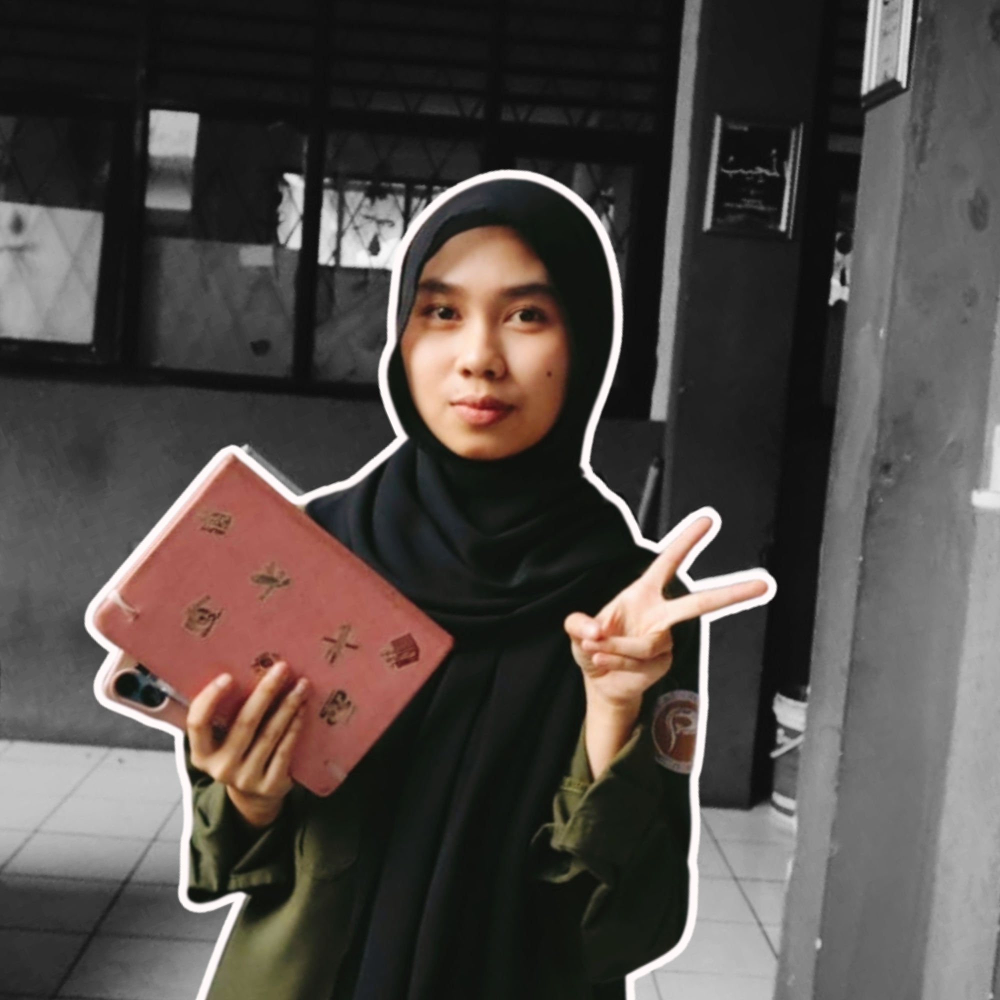
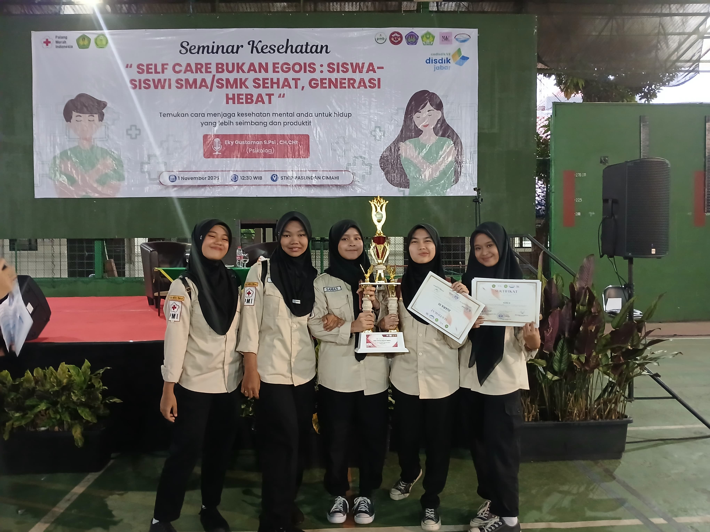
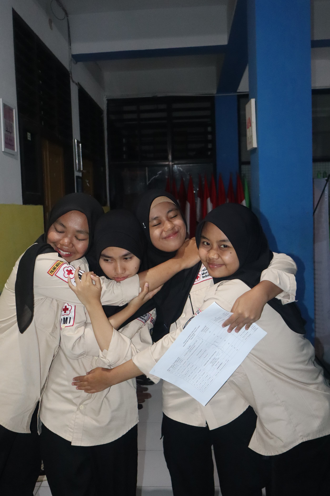
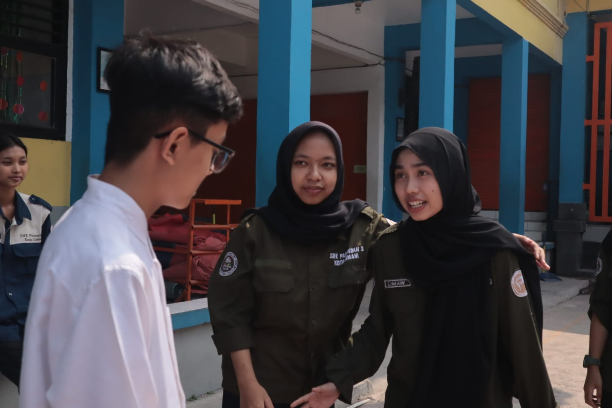
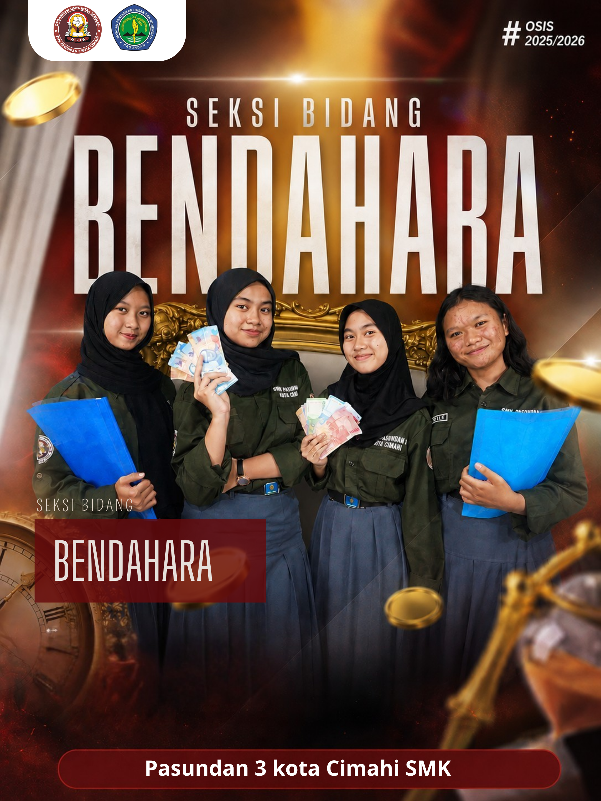

CR itu bukan Cristiano Ronaldo ya wkwk — CR itu Cahya Ramadina. Suka warna ijo, strawberry, dan karya sastra.

Periode 2025-2026
Selain jadi Bendahara di OSIS, aku juga anak PMR.
Seminar Kesehatan "Self Care Bukan Egois" STKIP Pasundan Cimahi, 1 November 2025
Sukanya nulis karya sastra kaya puisi atau novel, dan seringnya berkontribusi di bagian penulisan naskah-naskah berita.

ikut Seminar Kesehatan "Self Care Bukan Egois" kolaborasi STKIP Pasundan & KSR PMI STKIP Pasundan Cimahi, sekalian dapet Juara 3 di lomba PMR-nya, alhamdulillah hehe

momen seneng-seneng bareng tim PMR abis lomba, seru bgt rasanya wkwk

momen pas kegiatan pemilihan anggota OSIS baru di sekolah

ini poster buat Seksi Bidang Bendahara OSIS 2025/2026 punya kita, dibikin bareng-bareng sama tim yaa hehe
Ada ide, kerjasama, atau cuma mau say hi — cus hubungin aku.